Model values during post-training. Model values are one high-level descriptor of model behavior/character. We want to find what in the post-training data or process caused these values to emerge. While data attribution helps, it's not the full picture and we think it is important to be able to predict these values from data.
Hello :)
Hi, I'm Lily (or you may know me as Xiaoqing). I'm a junior at MIT studying physics. Welcome to my infodump website :)
My research interests are broadly related to AI alignment. I've done some work on LLM feature representations and post-training (check out my research page). I think understanding models better is important so we can make sure they do what we want them to do.
Other than that, I'm just a college student trying to figure out life. Feel free to reach out at xqsun@mit.edu.
Life Story
I grew up in Singapore and went to Raffles Girls' School & Raffles Institution. During high school I mostly occupied myself with physics (IPhO) and later astronomy (IOAA) competitions. I also spent a lot of time on physics research through IYPT (or OYPT) which is a great program. These allowed me to go to some pretty life-changing camps like SIYSS and Atlas. Unrelated to work I was also in the SNYO which was super fun.
I then went to MIT and decided to major in physics. The summer after freshman year, I did MISTI at the University of Pisa in Italy. At the beginning of sophomore year I got into AI interpretability, thanks to my GOAT advisor Max Tegmark. I was also a MATS 8.0 scholar under Neel Nanda. This was a 10/10 program and something I highly recommend for anyone looking to get into AI safety.
Currently I'm a junior. This summer I will be interning at Jump as a QR, and I'm thinking about post-graduation plans.
Recently
- [2026.05.02] Went to ICLR and it was fun. Will most likely be at ICML in July.
- [2026.03.23] I decided to graduate MIT a year early i.e. May 2026, with uncertain post-grad plans, but super open to chat about this.
- [2026.02.23] I spent January 2026 in London doing the MATS Extension! Started on a project about model values during post-training, will continue working on this during the semester.
Music
My music taste is fire in my (unbiased) opinion, so here are some amazing playlists.
Classical
70++ hours of classical because it is the best genre.
Life story
If 70 hours of classical is too much, these are some of the GOATs.
Movie soundtracks
This is probably quite a bad playlist objectively since it's just based on what movies I like / are nostalgic for me.
Needle drops
Self-explanatory, IYKYK.
Travel / Photography
I love traveling and experiencing new places and things. Fun fact, since Aug 2023 when I started at MIT, I've flown 63 flights for a total distance of 7.9x around the world, although a lot of that is just going home (BOS-SIN is brutal) or work-related stuff.
I like taking pictures. Most of these are taken with a Canon EOS R50, more on my Instagram.
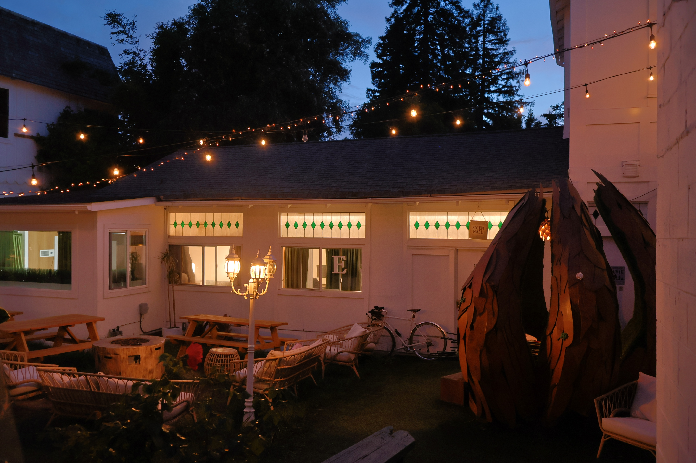


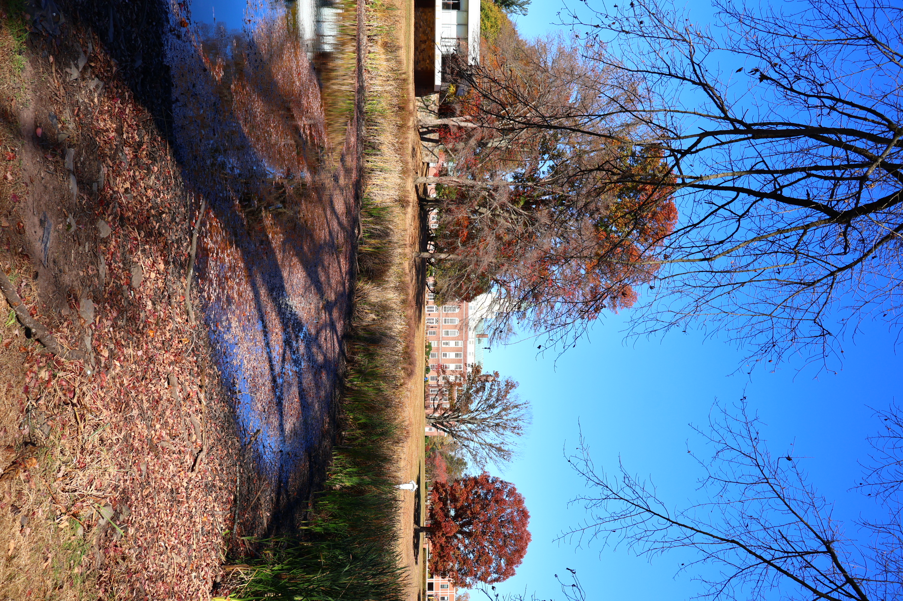


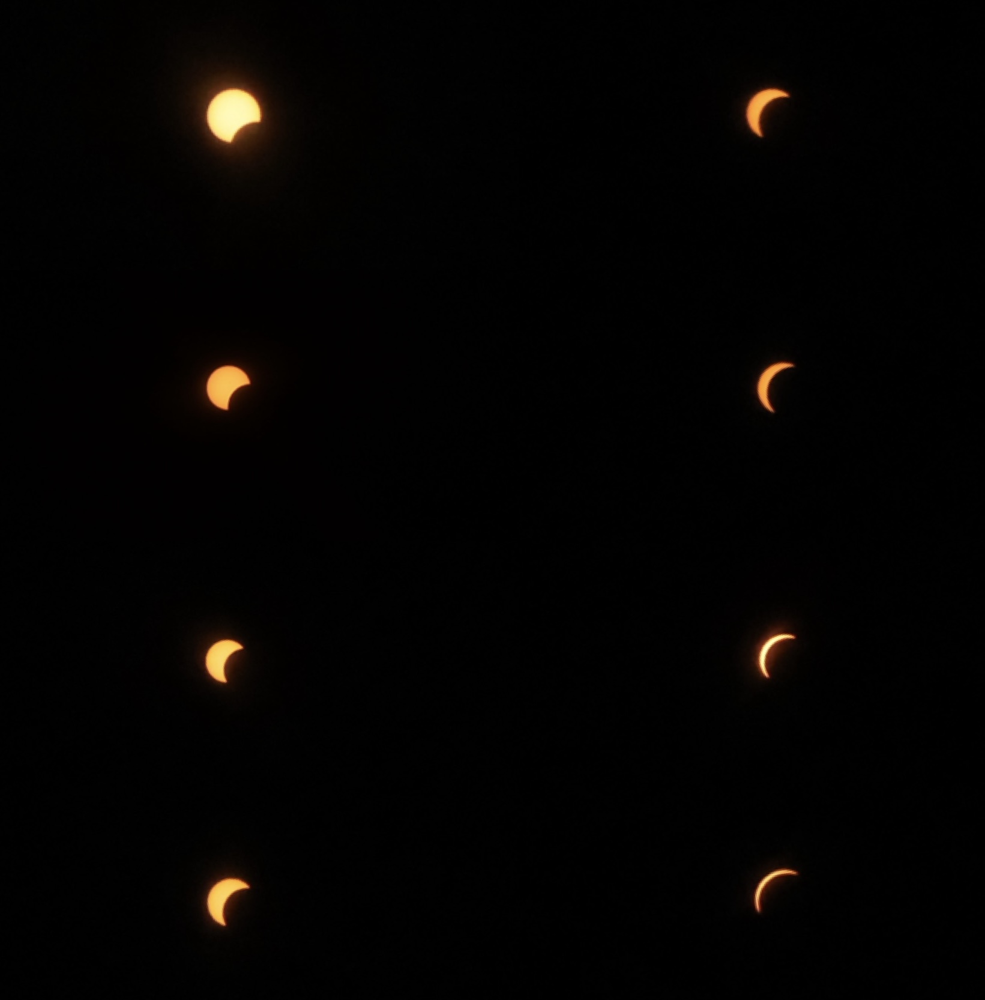
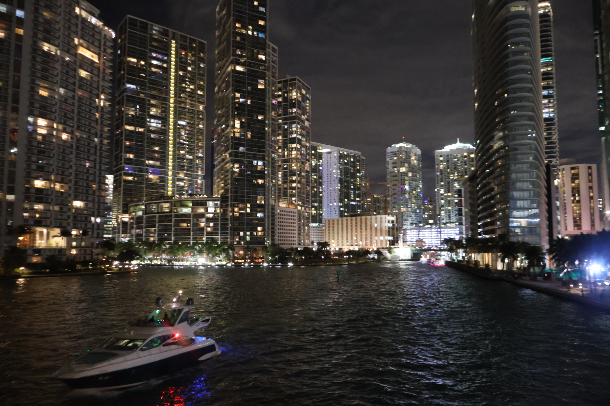
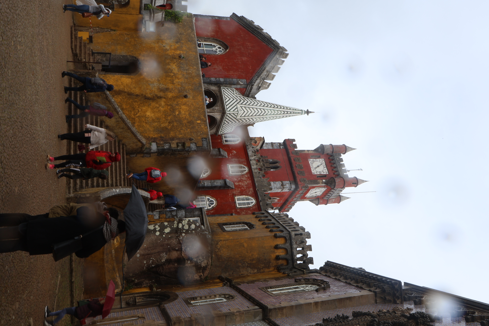
Research Interests
Models should be aligned. To me this means 1. being able to interpret what they're doing and 2. being able to shape them intentionally.
In-Progress
Edge of stochastic stability. We know that deep networks train at the edge of stability in GD and at an analogous stochastic edge for SGD. Optimizers + SGD is a little less understood and we wonder if there is a universal descriptor of this regime.
First-Author Publications
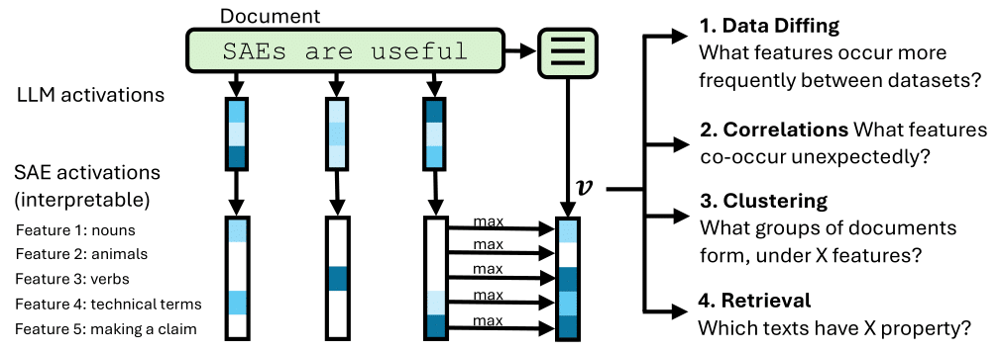
Interpretable Embeddings with Sparse Autoencoders: A Data Analysis Toolkit
N Jiang*, X Sun*, L Dunlap, L Smith, N Nanda
ICML 2026 -
arXiv:2512.10092
SAEs may or may not be useful for interpreting models, but we think they are useful for interpreting (text) data. We explore the use of SAEs as effectively a data labeller.

Dense SAE Latents Are Features, Not Bugs
X Sun*, A Stolfo*, J Engels, B Wu, S Rajamanoharan, M Sachan, M Tegmark
NeurIPS 2025 -
arXiv:2506.15679
Some features in SAEs occur very frequently. We look into these features, finding that they often correspond to true high-frequency model signals.
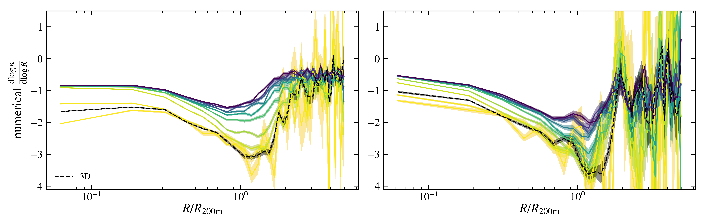
The effects of projection on the splashback feature
X Sun, S O'Neil, X Shen, M Vogelsberger
The Open Journal of Astrophysics 2025 8 (July). -
arXiv:2503.04882
The boundaries of galaxy halos are fuzzy, and observations differ from simulations. We investigate the effects of projection on measuring this boundary.
Other Publications
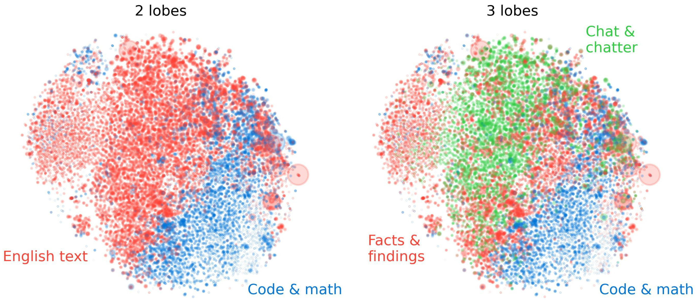
The Geometry of Concepts: Sparse Autoencoder Feature Structure
Y Li*, EJ Michaud*, DD Baek*, J Engels, X Sun, Max Tegmark
Entropy 27 (4), 344 -
arXiv:2410.19750
When I first joined Tegmark's group, I helped out with this project, showing how SAE feature geometry reflects semantic structure.
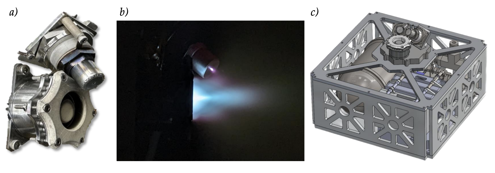
Performance and Plume Characterization of the MUlti–Stage Ignition Compact (MUSIC) Hall Effect Thruster
GC Potrivitu, M Laterza, D Agarwal, X Sun, JWM Lim
Proceedings of the 38th International Electric Propulsion Conference 2024 -
ResearchGate
I interned at Aliena after high school and worked on characterizing a small Hall effect thruster.
Other Stuff
8.13 Experimental Physics
8.13 (also known as Junior Lab) is the big experimental physics class for physics majors at MIT. It is known to be pretty time-consuming, which I found to be true, but it was also really fun and I enjoyed doing experiments that involved touching stuff other than a keyboard. For fun, here are my lab reports.
Experiment 1: Measuring the temperature of the Sun at 21cm
MIT has a big radio telescope on a roof, which I pointed at the Sun.
View PDF
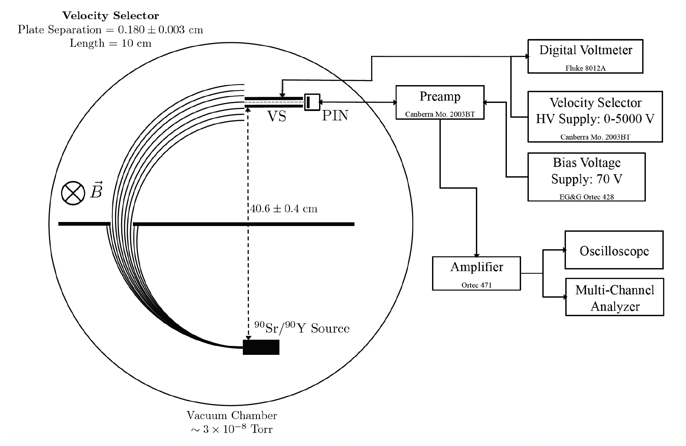
Experiment 2: Measuring the charge-to-mass ratio of the electron using relativistic dynamics
We can investigate whether electrons from radioactive decay follow relativistic or classical dynamics by examining their momentum-velocity relationship. Spoiler: relativity is correct.
View PDF
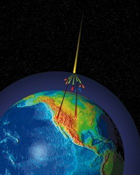
Experiment 3
Muons (the particle not the optimizer) are created in the atmosphere by cosmic rays. Muon counts vary with altitude and latitude, so I brought the apparatus (CosmicWatch) with me on the plane to ICLR in Rio to measure this effect. I was a little stressed that TSA would stop me for having a mysterious duct-taped device with blinking lights but all went well.